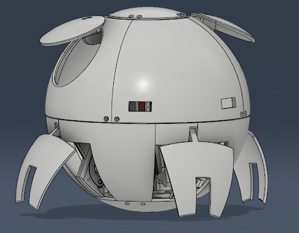

The Deceptecon robot's goal is to be able to crawl on rough terrain, and roll on flat, even terrain.

The above image shows what a 3d model of what we plan what the robot will look like (legs not shown) in the end.
Our ultimate goal for Deceptacon is to create a robot that can utilize both "wheels" and legs to travel on various different terrians. Deceptacon has two functions: follow a slow moving target "person" (or thing) with it's walking ability, and springing into a roll once this target begins moving faster. In order to do this, deceptacon has a round, ball- like body that has 4 trap doors to roll. When walking is more efficent, the trap doors open to reveal 4 legs. Each of these legs are powered by 2 servos each. One to function it's yaw axis, and another to control the pitch axis. Along with 2 servos per leg, we are going to use 2 more servos to animate large "ears" at the top of out robot. These ears will function as stabilizers as it rolls, ensuring that it rolls in a straight line. In total, we will be using 10 servos- 8 for legs, 2 for ears. We are using eight Vl53l0x light sensors around the perimeter of the robot for it to sense it's enviroment, even when it's in rolling mode. This will help the robot stay steady as it rolls on the floor.